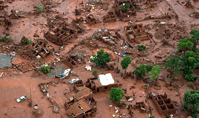

Plante uma árvore
Contribua para aumentar os espaços verdes. Plantar uma árvore deixou de ser clichê para se tornar uma necessidade e um compromisso de todos.

Barragem de mariana
Há 3 anos, rompimento de barragem de Mariana causou maior desastre ambiental do país e matou 19 pessoas
Cesio 137
O acidente radiológico de Goiânia, amplamente conhecido como acidente com o césio-137, foi um grave episódio de contaminação por radioatividade